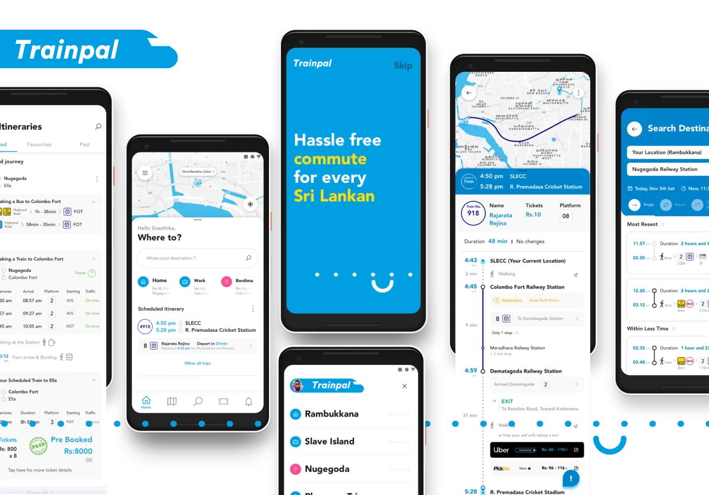

TrainPal
Train Booking & Multimodal Commute Platform
DESCRIPTION
TrainPal was a community - driven initiative to design Sri Lanka’s first end-to-end commuter transport platform, connecting train travel with last-mile mobility, ticketing, and real-time commuter intelligence. The product aimed to help users plan, book, and manage daily journeys from exact pickup point to final destination - free for public use.
CONTEXT
Sri Lanka’s public transport ecosystem operates across disconnected systems-railways, buses, taxis, and ride-hailing services-with no unified experience layer. Commuters rely on fragmented information, informal knowledge, and guesswork, especially when combining trains with last-mile travel.
TrainPal explored a Sri Lanka–first mobility model, integrating train schedules, platform data, ride-hailing APIs, and community-generated crowd insights into a single planning experience. The project was initiated as a GDG Sri Lanka community program funded by Google, with a multidisciplinary volunteer team.
Despite completing design, validation, and early development groundwork, the project was discontinued due to funding and continuity constraints before public launch.
